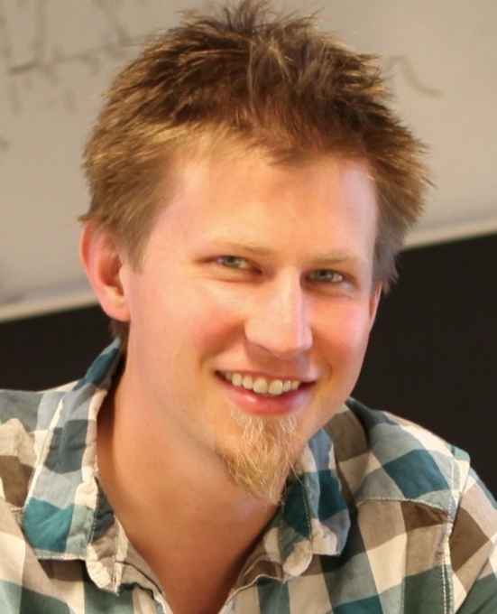
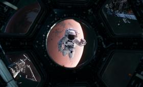
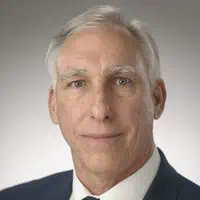
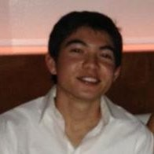
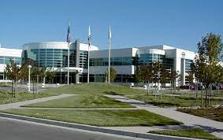
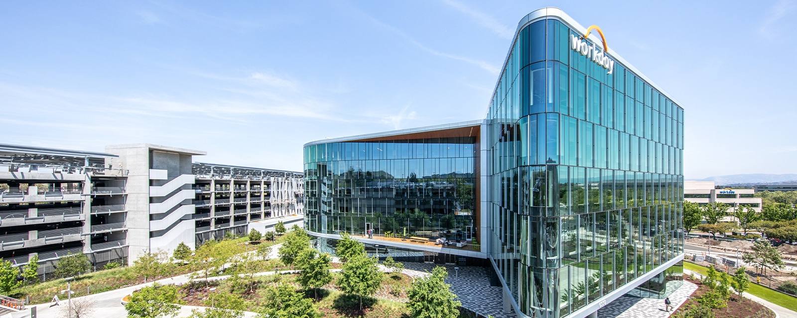
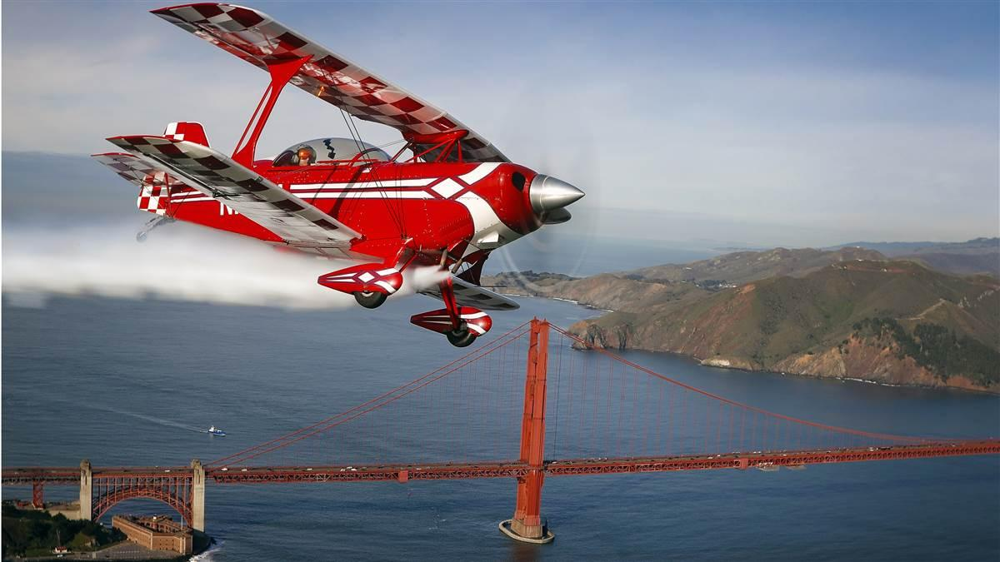
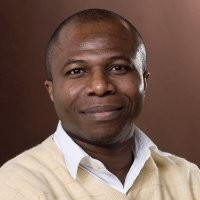

Career Exploration
During my experience in the Dublin High School Engineering Academy, I was able to go on extremely interesting field trips and hear from industry proffessionals that opened my eyes to different career options.
Guest Speakers
Jason Yosinski

Jason Yosinski worked on deep learning withtin Uber. He talked about the complexity of simple artificial intelligence programs and the intracacies of creating them. He also talked about the future of deep learning and how the possibilities are endless. Some of the main things I learned about deep learning is that the models are good at things which humans are good at such as decision making and identifying things. They are not good at memorization and heavy data, which is also similar to humans. This opened my eye to the complex world of artificial intelligence and deep learning.
Dr. Matt Coleman, Dr. Mattias Frank, Dr. David Loftus, Erin McKay

This talk was about the medical challenges astronauts and scientists face while they are going to another planet. The main problem they have to deal with on a trip to a planet like mars is that they have to keep all of the tools and medicines inside the space shuttle since it is 6 months away from earth. The main takeaway from this talk is how creative the engineers working on the medical devices are. They made very practical and unique machines that can easily be transported through space shuttle, but are still effective to use on humans.
Anthony Strawa

Anthony Strawa, a former NASA scientist, gave a talk on the dangers of air pollution. Currently, Strawa works with Sustainable Silicon Valley to help tackle the issue. Air pollution is severly affected by the burning of fossil fuels and gasoline. Thus, he warned us about the dangers that traffic jams cause, more than just time wasting for people stuck in it, but the damage it does to the environment. Cars release soot particles which have lots of carbons and other heavy metals which pollute the air and make it dangerous to breathe.
James Chinn

James Chinn is an engineer from JPL who worked on the Mars Rover, Perseverance, which is currently exploring Mars. Chinn’s work focused on combining mechanical and electrical engineering, and really piqued my interest after the news storm generated by the landing. It was amazing seeing such a complex task being broken down into subgroups, and, after hearing Chinn’s talk on how the multiple subtopics of engineering work together, I realized that I could pursue not just CS, but perhaps multiple or a whole new topic altogether. His talk has had a profound impact on my major in college and career as a future engineer.
Field Trips
San Jose State and Santa Clara University

As a high school student, it was very interesting to see how life at college was. There was a lot more things to do on a college campus and it was a lot bigger. In college, there is a lot more flexibility with what classes you take and how you planb out your day to day schedule.
Roche Molecular Systems

In 10th grade, my class and I visited the biotechnology company Roche Molecular Systems. It was an amazing introduction as to what biotechnology exactly is. I got to see niche machines that do complicated tests and complex tasks to help scientists find information. It helped me realize how important biotecnology as it grows in the future, as it can combat diseases, viruses, and other biological problems. Through Roche, I not only met scientists, but I had a chance to talk to sales people, engineers, directors, and more. Overall, it was a great expeience as it broadened my viewpoint on what engineering could be.
Bart and Workday

I had the oppurtunity to go to a Bart and Workday. I learned how the BART works, in terms of the train movement and the power. There are different types of "cars" (compartments, A2, B2, C1, etc) and depending on the need, different compartments can be put together. Each car has "shoes" which collect power of up to 1k Volts from a specialized rail through collector shoes. Workday was also an amazing experience. Workday is a cloud management company that helps other companies manage everything from finances to human capital. I met with several QAs (quality assurance) who's job was essentially to find faults and other mistakes within something. After finding an issue, they help fix and control it by connectng with differnt teams. Workday gave me an insight on how a software company works day to day.
Livermore Aviation Tour

The Livermore Aviation Tour was a useful experience because I had a chance to learn from professionals with years of experience about the details of plane construction and flight. There were a lot of details about engineering planes so that they fly as smoothly as possible that I haven't considered before. Getting to see a live video of a pilot operating a plane and explaining the process was memorable and encouraged me to learn more about aviation as it's a relevant and complex field.
Mentorship Program

My mentors for the mentorship program were Jonathon Ayutsede and Rupert Young. My main mentor was Jonathon and my secondary mentor was Rupert. Although Jonathon was not in the computer science field, he taught me a lot about the work industry and how computer science is integrated into other fields. I also learned a lot of life skills through this internship like how to take an interview and how to construct a complete resume. Overall, the mentorship experience opened my eyes to different types of careers and how life is after college.